Test e Intervalli di Confidenza
Un campione, IdC e test per \(\mu\), \(\sigma\) nota (z test).
1.1 Un’indagine in 17 aziende, che producono lo stesso prodotto, ha rilevato che il costo per unità è pari a euro 30.00 in media con una deviazione standard pari a euro 1.50.
Determinare un intervallo di confidenza al 99% per il costo medio per unità.
\(1-\alpha =0.99\) e quindi \(\alpha=0.01\rightarrow \alpha/2=0.005\)
\[ S =\sqrt{\frac {n}{n-1}}\cdot\hat\sigma = \sqrt{\frac { 17 }{ 16 }}\cdot 1.5 = 1.5462 \] \[\begin{eqnarray*} Idc: & & \hat\mu \pm t_{n-1;\alpha/2} \times \frac{S}{\sqrt{n}} \\ & & 30 \pm 2.921 \times \frac{ 1.5462 }{\sqrt{ 17 }} \\ & & 30 \pm 2.921 \times 0.375 \\ & & [ 28.9 , 31.1 ] \end{eqnarray*}\]
1.2 L’indagine dell’anno precedente, condotta su un campione molto più numeroso, mostrava un costo medio pari a euro 29.00 con una deviazione standard pari a 2.00 euro. Verificare l’ipotesi che il costo medio del prodotto osservato nell’anno corrente sia equivalente a quello osservato nell’anno precedente contro l’alternativa di un aumento del costo. Specificare in modo esplicito il tipo di test utilizzato, l’ipotesi nulla e l’ipotesi alternativa e trarre le opportune conclusioni.
Test \(Z\) per una media, variazna nota
\(\fbox{A}\) FORMULAZIONE DELLE IPOTESI
\[\begin{cases} H_0: \mu = \mu_0=29 \\ H_1: \mu > \mu_0=29 \end{cases}\]
\(\fbox{B}\) SCELTA E CALCOLO STATISTICA-TEST, \(Z\)
\(\sigma^{2}\) di \(\cal{P}\) è nota: \(\Rightarrow\) z-Test.
\[\begin{eqnarray*} \frac{\hat\mu - \mu_{0}} {\sigma/\sqrt{n}}&\sim&N(0,1)\\ z_{\text{obs}} &=& \frac{ ( 30 - 29 )} { 2 /\sqrt{ 17 }} = 2.062 \, . \end{eqnarray*}\]
\(\fbox{C}\) CONCLUSIONE
Consideriamo \(\alpha=0.1, 0.05, 0.01, 0.001\)
I valori critici sono
\(z_{0.1}=1.2816\); \(z_{0.05}=1.6449\); \(z_{0.01}=2.3263\); \(z_{0.001}=3.0902\)
Siccome \(1.6449<z_\text{obs}=2.0616<2.3263\), quindi rifiuto \(H_0\) al 5%,
\(0.01<p_\text{value}<0.05\), significativo \(\fbox{*}\).
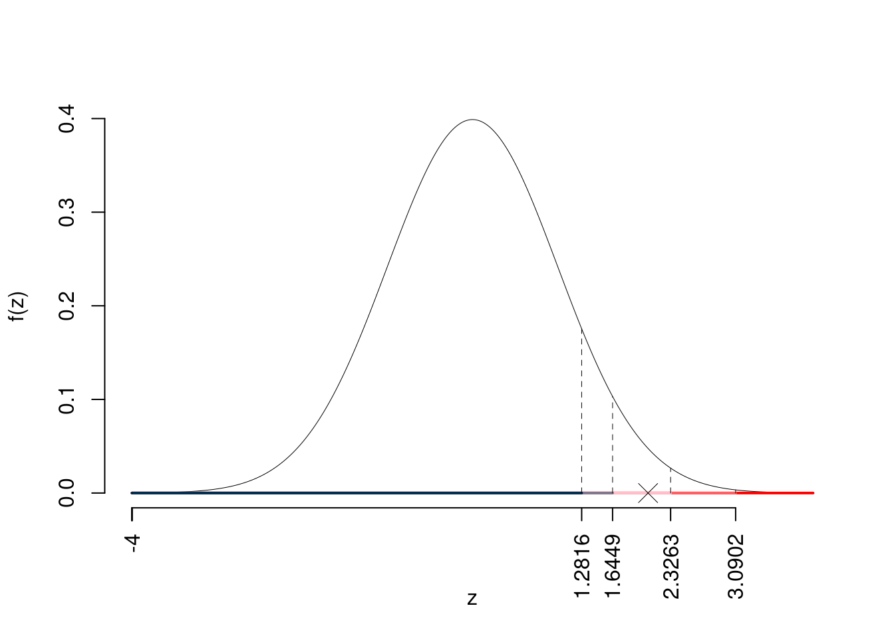
Il \(p_{\text{value}}\) è
\[ p_{\text{value}} = P(Z>2.06)=0.019625 \]
\[ 0.01 < p_\text{value}= 0.019625 \leq 0.05 \]
2.1 Un’indagine in 15 aziende, che producono lo stesso prodotto, ha rilevato che il costo per unità è pari a euro 25.00 in media con una deviazione standard pari a euro 2.00.
Determinare un intervallo di confidenza al 95% per il costo medio per unità.
\(1-\alpha =0.95\) e quindi \(\alpha=0.05\rightarrow \alpha/2=0.025\)
\[ S =\sqrt{\frac {n}{n-1}}\cdot\hat\sigma = \sqrt{\frac { 15 }{ 14 }}\cdot 2 = 2.0702 \] \[\begin{eqnarray*} Idc: & & \hat\mu \pm t_{n-1;\alpha/2} \times \frac{S}{\sqrt{n}} \\ & & 25 \pm 2.145 \times \frac{ 2.0702 }{\sqrt{ 15 }} \\ & & 25 \pm 2.145 \times 0.5345 \\ & & [ 23.85 , 26.15 ] \end{eqnarray*}\]
2.2 L’indagine dell’anno precedente, condotta su un campione molto più numeroso, mostrava un costo medio pari a euro 26.00 con una deviazione standard pari a 2.50 euro. Verificare l’ipotesi che il costo medio del prodotto osservato nell’anno corrente sia equivalente a quello osservato nell’anno precedente contro l’alternativa di una diminuzione del costo. Specificare in modo esplicito il tipo di test utilizzato, l’ipotesi nulla e l’ipotesi alternativa e trarre le opportune conclusioni.
Test \(Z\) per una media, variazna nota
\(\fbox{A}\) FORMULAZIONE DELLE IPOTESI
\[\begin{cases} H_0: \mu = \mu_0=26 \\ H_1: \mu < \mu_0=26 \end{cases}\]
\(\fbox{B}\) SCELTA E CALCOLO STATISTICA-TEST, \(Z\)
\(\sigma^{2}\) di \(\cal{P}\) è nota: \(\Rightarrow\) z-Test.
\[\begin{eqnarray*} \frac{\hat\mu - \mu_{0}} {\sigma/\sqrt{n}}&\sim&N(0,1)\\ z_{\text{obs}} &=& \frac{ ( 25 - 26 )} { 2.5 /\sqrt{ 15 }} = -1.549 \, . \end{eqnarray*}\]
\(\fbox{C}\) CONCLUSIONE
Consideriamo \(\alpha=0.1, 0.05, 0.01, 0.001\)
I valori critici sono
\(z_{0.1}=-1.2816\); \(z_{0.05}=-1.6449\); \(z_{0.01}=-2.3263\); \(z_{0.001}=-3.0902\)
Siccome \(-3.0902<z_\text{obs}=-1.5492<-2.3263\), indecisione sul rifiuto di \(H_0\) al 10%,
\(0.05<p_\text{value}<0.1\), marginalmente significativo \(\fbox{.}\).
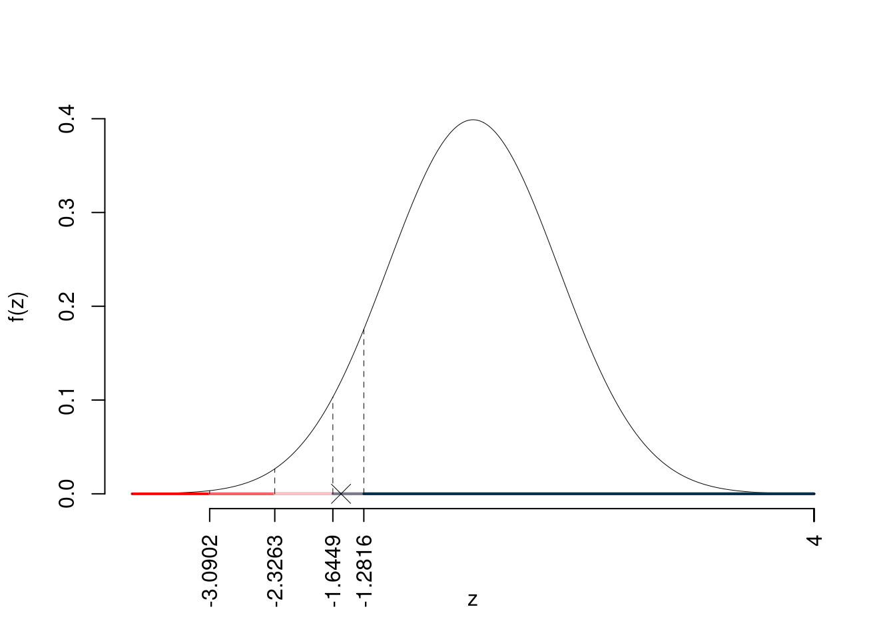
Il \(p_{\text{value}}\) è
\[ p_{\text{value}} = P(Z<-1.55)=0.060668 \]
\[ 0.05 < p_\text{value}= 0.060668 \leq 0.1 \]
3.1 Un’indagine in 20 aziende, che producono lo stesso prodotto, ha rilevato che il costo per unità è pari a euro 28.00 in media con una deviazione standard pari a euro 1.80.
Determinare un intervallo di confidenza al 95% per il costo medio per unità.
\(1-\alpha =0.95\) e quindi \(\alpha=0.05\rightarrow \alpha/2=0.025\)
\[ S =\sqrt{\frac {n}{n-1}}\cdot\hat\sigma = \sqrt{\frac { 20 }{ 19 }}\cdot 1.8 = 1.8468 \] \[\begin{eqnarray*} Idc: & & \hat\mu \pm t_{n-1;\alpha/2} \times \frac{S}{\sqrt{n}} \\ & & 28 \pm 2.093 \times \frac{ 1.8468 }{\sqrt{ 20 }} \\ & & 28 \pm 2.093 \times 0.4129 \\ & & [ 27.14 , 28.86 ] \end{eqnarray*}\]
3.2 L’indagine dell’anno precedente, condotta su un campione molto più numeroso, mostrava un costo medio pari a euro 27.00 con una deviazione standard pari a 2.20 euro. Verificare l’ipotesi che il costo medio del prodotto osservato nell’anno corrente sia equivalente a quello osservato nell’anno precedente contro l’alternativa di un cambiamento del costo. Specificare in modo esplicito il tipo di test utilizzato, l’ipotesi nulla e l’ipotesi alternativa e trarre le opportune conclusioni.
Test \(Z\) per una media, variazna nota
\(\fbox{A}\) FORMULAZIONE DELLE IPOTESI
\[\begin{cases} H_0: \mu = \mu_0=27 \\ H_1: \mu \neq \mu_0=27 \end{cases}\]
\(\fbox{B}\) SCELTA E CALCOLO STATISTICA-TEST, \(Z\)
\(\sigma^{2}\) di \(\cal{P}\) è nota: \(\Rightarrow\) z-Test.
\[\begin{eqnarray*} \frac{\hat\mu - \mu_{0}} {\sigma/\sqrt{n}}&\sim&N(0,1)\\ z_{\text{obs}} &=& \frac{ ( 28 - 27 )} { 2.2 /\sqrt{ 20 }} = 2.033 \, . \end{eqnarray*}\]
\(\fbox{C}\) CONCLUSIONE
Siccome \(H_1\) è bilaterale, considereremo \(\alpha/2\), anziché \(\alpha\)
\(\alpha=0.1, 0.05, 0.01, 0.001\) e quindi \(\alpha/2=0.05, 0.025, 0.005, 0.0005\)
I valori critici sono
\(z_{0.05}=1.6449\); \(z_{0.025}=1.96\); \(z_{0.005}=2.5758\); \(z_{0.0005}=3.2905\)
Siccome \(1.96<|z_\text{obs}|=2.0328<2.5758\), quindi rifiuto \(H_0\) al 5%,
\(0.01<p_\text{value}<0.05\), significativo \(\fbox{*}\).
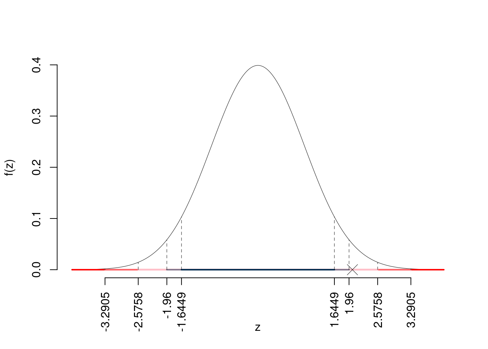
Il \(p_{\text{value}}\) è
\[ p_{\text{value}} = P(|Z|>|2.03|)=2P(Z>2.03)=0.042074 \]
\[ 0.01 < p_\text{value}= 0.042074 \leq 0.05 \]
Un campione, IdC e test per \(\mu\), \(\sigma\) incognita (t test).
4.1 Sia \(X\) l’età dei parlamentari italiani. Si sceglie un campione di 20 parlamentari italiani e si ottiene una media di 48.5 anni con una deviazione standard pari a 10.6 anni.
Determinare un intervallo di confidenza al 95% per l’età media dei politici italiani.
\(1-\alpha =0.95\) e quindi \(\alpha=0.05\rightarrow \alpha/2=0.025\)
\[ S =\sqrt{\frac {n}{n-1}}\cdot\hat\sigma = \sqrt{\frac { 20 }{ 19 }}\cdot 10.6 = 10.8754 \] \[\begin{eqnarray*} Idc: & & \hat\mu \pm t_{n-1;\alpha/2} \times \frac{S}{\sqrt{n}} \\ & & 48.5 \pm 2.093 \times \frac{ 10.8754 }{\sqrt{ 20 }} \\ & & 48.5 \pm 2.093 \times 2.432 \\ & & [ 43.41 , 53.59 ] \end{eqnarray*}\]
4.2 è noto che l’età media dei politici europei è di 55 anni. Verificare l’ipotesi che l’età media dei politici italiani sia uguale a quella dei politici europei contro l’alternativa che sia minore. Specificare in modo esplicito il tipo di test utilizzato, l’ipotesi nulla e l’ipotesi alternativa e trarre le opportune conclusioni.
Test \(t\) per una media, varianza incognita
\(\fbox{A}\) FORMULAZIONE DELLE IPOTESI
\[\begin{cases} H_0: \mu = \mu_0=55 \\ H_1: \mu < \mu_0=55 \end{cases}\]
\[\begin{eqnarray*} S &=& \sqrt{\frac{n} {n-1}}\ \widehat{\sigma} = \sqrt{\frac{ 20 } { 20 -1}} \times 10.6 = 10.88 \end{eqnarray*}\] \[\begin{eqnarray*} \frac{\hat\mu - \mu_{0}} {S/\,\sqrt{n}}&\sim&t_{n-1}\\ t_{\text{obs}} &=& \frac{ ( 48.5 - 55 )} { 10.88 /\sqrt{ 20 }} = -2.673 \, . \end{eqnarray*}\]
\(\fbox{C}\) CONCLUSIONE
Consideriamo \(\alpha=0.1, 0.05, 0.01, 0.001\)
I valori critici sono
\(t_{20-1;0.1}=-1.3277\); \(t_{20-1;0.05}=-1.7291\); \(t_{20-1;0.01}=-2.5395\); \(t_{20-1;0.001}=-3.5794\)
Siccome \(-1.7291<t_\text{obs}=-2.6729<-1.3277\), quindi rifiuto \(H_0\) all’1%,
\(0.001<p_\text{value}<0.01\), molto significativo \(\fbox{**}\).
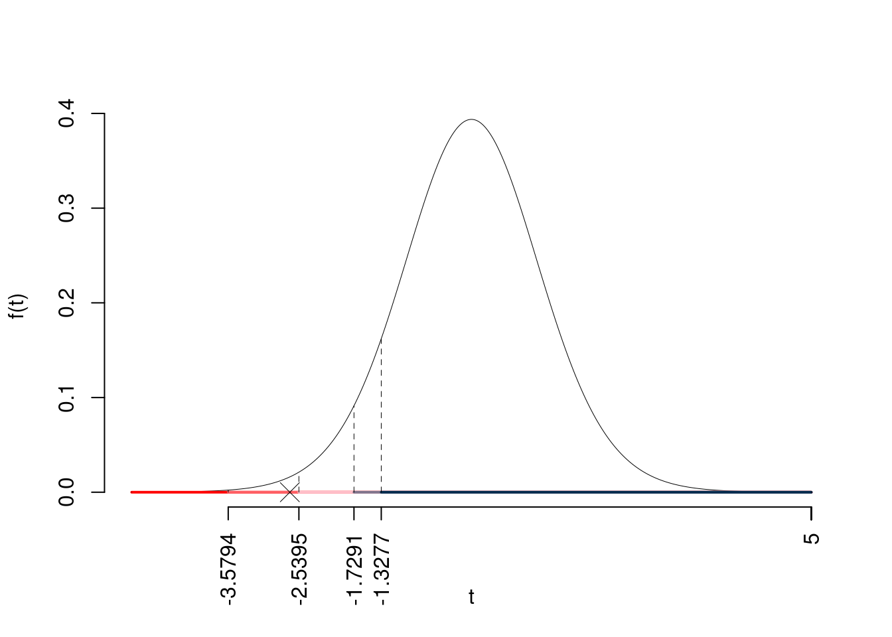
Il \(p_{\text{value}}\) è
\[ p_{\text{value}} = P(T_{20-1}<-2.67)=0.007521 \]
Attenzione il calcolo del \(p_\text{value}\) con la \(T\) è puramente illustrativo e non può essere riprodotto senza una calcolatrice statistica adeguata.\[ 0.001 < p_\text{value}= 0.007521 \leq 0.01 \]
5.1 Sia \(X\) il reddito annuale dei manager italiani. Si sceglie un campione di 30 manager italiani e si ottiene una media di 85 mila euro con una deviazione standard pari a 15 mila euro.
Determinare un intervallo di confidenza al 99% per il reddito medio annuale dei manager italiani.
\(1-\alpha =0.99\) e quindi \(\alpha=0.01\rightarrow \alpha/2=0.005\)
\[ S =\sqrt{\frac {n}{n-1}}\cdot\hat\sigma = \sqrt{\frac { 30 }{ 29 }}\cdot 15 = 15.2564 \] \[\begin{eqnarray*} Idc: & & \hat\mu \pm t_{n-1;\alpha/2} \times \frac{S}{\sqrt{n}} \\ & & 85 \pm 2.756 \times \frac{ 15.2564 }{\sqrt{ 30 }} \\ & & 85 \pm 2.756 \times 2.785 \\ & & [ 77.32 , 92.68 ] \end{eqnarray*}\]
5.2 è noto che il reddito medio annuale dei manager europei è di 80 mila euro. Verificare l’ipotesi che il reddito medio annuale dei manager italiani sia uguale a quello dei manager europei contro l’alternativa che sia maggiore. Specificare in modo esplicito il tipo di test utilizzato, l’ipotesi nulla e l’ipotesi alternativa e trarre le opportune conclusioni.
Test \(t\) per una media, varianza incognita
\(\fbox{A}\) FORMULAZIONE DELLE IPOTESI
\[\begin{cases} H_0: \mu = \mu_0=80 \\ H_1: \mu > \mu_0=80 \end{cases}\]
\[\begin{eqnarray*} S &=& \sqrt{\frac{n} {n-1}}\ \widehat{\sigma} = \sqrt{\frac{ 30 } { 30 -1}} \times 15 = 15.26 \end{eqnarray*}\] \[\begin{eqnarray*} \frac{\hat\mu - \mu_{0}} {S/\,\sqrt{n}}&\sim&t_{n-1}\\ t_{\text{obs}} &=& \frac{ ( 85 - 80 )} { 15.26 /\sqrt{ 30 }} = 1.795 \, . \end{eqnarray*}\]
\(\fbox{C}\) CONCLUSIONE
Consideriamo \(\alpha=0.1, 0.05, 0.01, 0.001\)
I valori critici sono
\(t_{30-1;0.1}=1.3114\); \(t_{30-1;0.05}=1.6991\); \(t_{30-1;0.01}=2.462\); \(t_{30-1;0.001}=3.3962\)
Siccome \(1.6991<t_\text{obs}=1.7951<2.462\), quindi rifiuto \(H_0\) al 5%,
\(0.01<p_\text{value}<0.05\), significativo \(\fbox{*}\).
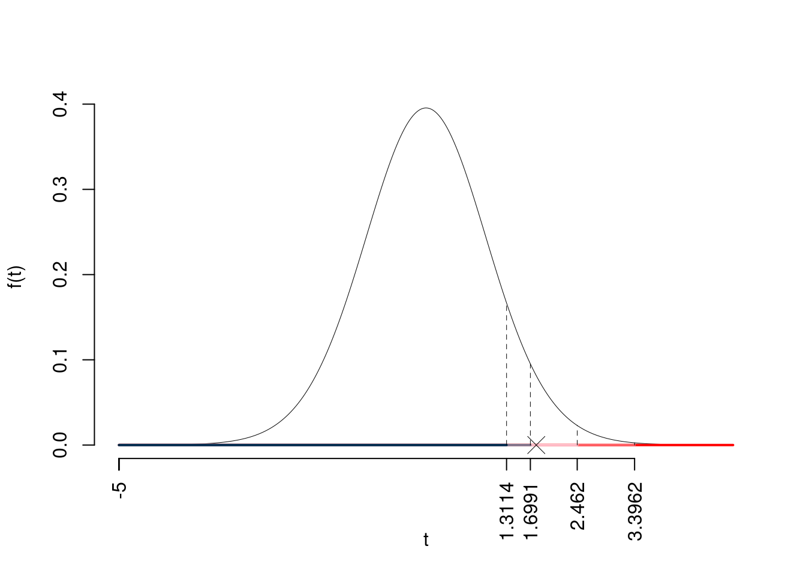
Il \(p_{\text{value}}\) è
\[ p_{\text{value}} = P(T_{30-1}>1.8)=0.041537 \]
Attenzione il calcolo del \(p_\text{value}\) con la \(T\) è puramente illustrativo e non può essere riprodotto senza una calcolatrice statistica adeguata.\[ 0.01 < p_\text{value}= 0.041537 \leq 0.05 \]
6.1 Per accertare lo stato di preparazione dei dipendenti di una struttura pubblica si è estratto un campione di 26 impiegati. A ogni impiegato è stato somministrato un test, con punteggio da 0 a 100, per accertare il suo grado di competenza, \(X\). Il valore medio ottenuto è pari a 78 con una deviazione standard pari a 12.
Determinare un intervallo di confidenza al 95% per \(\mu = E(X)\).
\(1-\alpha =0.95\) e quindi \(\alpha=0.05\rightarrow \alpha/2=0.025\)
\[ S =\sqrt{\frac {n}{n-1}}\cdot\hat\sigma = \sqrt{\frac { 26 }{ 25 }}\cdot 12 = 12.2376 \] \[\begin{eqnarray*} Idc: & & \hat\mu \pm t_{n-1;\alpha/2} \times \frac{S}{\sqrt{n}} \\ & & 78 \pm 2.06 \times \frac{ 12.2376 }{\sqrt{ 26 }} \\ & & 78 \pm 2.06 \times 2.4 \\ & & [ 73.06 , 82.94 ] \end{eqnarray*}\]
6.2 Si supponga che il punteggio medio del test in un ampio studio sulla popolazione di impiegati, sia pari a 72. Con un livello di significatività uguale a 0.01 si può ritenere che il valore medio osservato nel campione sia diverso da 72?
Test \(t\) per una media, varianza incognita
\(\fbox{A}\) FORMULAZIONE DELLE IPOTESI
\[\begin{cases} H_0: \mu = \mu_0=72 \\ H_1: \mu \neq \mu_0=72 \end{cases}\]
\[\begin{eqnarray*} S &=& \sqrt{\frac{n} {n-1}}\ \widehat{\sigma} = \sqrt{\frac{ 26 } { 26 -1}} \times 12 = 12.24 \end{eqnarray*}\] \[\begin{eqnarray*} \frac{\hat\mu - \mu_{0}} {S/\,\sqrt{n}}&\sim&t_{n-1}\\ t_{\text{obs}} &=& \frac{ ( 78 - 72 )} { 12.24 /\sqrt{ 26 }} = 2.5 \, . \end{eqnarray*}\]
\(\fbox{C}\) CONCLUSIONE
Siccome \(H_1\) è bilaterale, considereremo \(\alpha/2\), anziché \(\alpha\)
\(\alpha=0.1, 0.05, 0.01, 0.001\) e quindi \(\alpha/2=0.05, 0.025, 0.005, 0.0005\)
I valori critici sono
\(t_{26-1;0.05}=1.7081\); \(t_{26-1;0.025}=2.0595\); \(t_{26-1;0.005}=2.7874\); \(t_{26-1;0.0005}=3.7251\)
Siccome \(2.0595<|t_\text{obs}|=2.5<2.7874\), quindi rifiuto \(H_0\) al 5%,
\(0.01<p_\text{value}<0.05\), significativo \(\fbox{*}\).
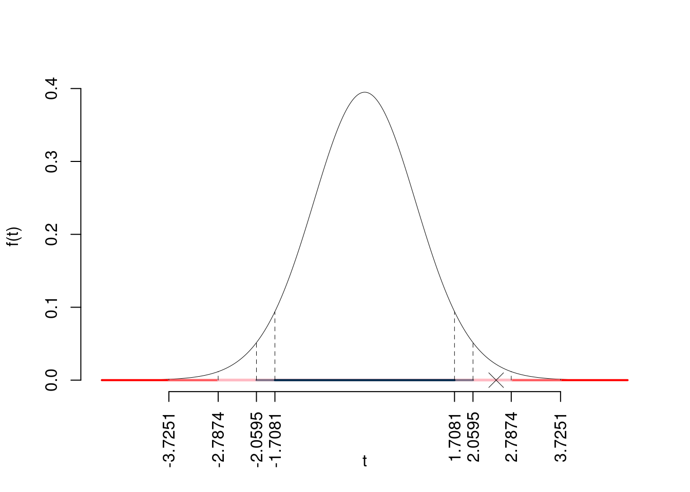
Il \(p_{\text{value}}\) è
\[ p_{\text{value}} = P(|T_{26-1}|>|2.5|)=2P(T_{26-1}>2.5)=0.019343 \]
Attenzione il calcolo del \(p_\text{value}\) con la \(T\) è puramente illustrativo e non può essere riprodotto senza una calcolatrice statistica adeguata.\[ 0.01 < p_\text{value}= 0.019343 \leq 0.05 \]
Un campione, IdC e test per \(\pi\) (z test).
7.1 Su un campione di \(n = 100\) abitanti del quartiere R è stato chiesto se siano favorevoli o meno all’introduzione di una nuova pista ciclabile. Lo studio ha riportato che 70 persone su 100 (il 70% del campione) è favorevole.
Costruire un intervallo di confidenza al 95% per \(\pi\) la quota di persone del quartiere R favorevole alla nuova pista ciclabile.
\(1-\alpha =0.95\) e quindi \(\alpha=0.05\rightarrow \alpha/2=0.025\)
\[ \hat\pi = \frac{S_n}n = \frac{ 70 }{ 100 }= 0.7 \]
\[\begin{eqnarray*} Idc: & & \hat\pi \pm z_{\alpha/2} \times \sqrt{\frac{\hat\pi(1-\hat\pi)}{n}} \\ & & 0.7 \pm 1.96 \times \sqrt{\frac{ 0.7 (1- 0.7 )}{ 100 }} \\ & & 0.7 \pm 1.96 \times 0.04583 \\ & & [ 0.6102 , 0.7898 ] \end{eqnarray*}\]
7.2 Un’indagine molto più ampia condotta su tutta la città ha mostrato che la percentuale di favorevoli alla pista ciclabile è del 65%. Testare l’ipotesi che nel quartiere R la quota di favorevoli sia uguale a quella cittadina contro l’alternativa che sia minore.
Test \(Z\) per una proporzione
La stima \[\hat\pi=\frac { 70 } { 100 }= 0.7 \]
\(\fbox{A}\) FORMULAZIONE DELLE IPOTESI
\[\begin{cases} H_0: \pi = \pi_0=0.65 \\ H_1: \pi > \pi_0=0.65 \end{cases}\]
\(\fbox{B}\) SCELTA E CALCOLO STATISTICA-TEST, \(Z\) Test Binomiale per \(n\) grande: \(\Rightarrow\) z-Test.
\[\begin{eqnarray*} \frac{\hat\pi - \pi_{0}} {\sqrt {\pi_0(1-\pi_0)/\,n}}&\sim&N(0,1)\\ z_{\text{obs}} &=& \frac{ ( 0.7 - 0.65 )} {\sqrt{ 0.65 (1- 0.65 )/ 100 }} = 1.048 \,. \end{eqnarray*}\]
\(\fbox{C}\) CONCLUSIONE
Il \(p_{\text{value}}\) è
\[ p_{\text{value}} = P(Z>1.05)=0.147254 \]
\[ 0.1 < p_\text{value}= 0.147254 \leq 1 \]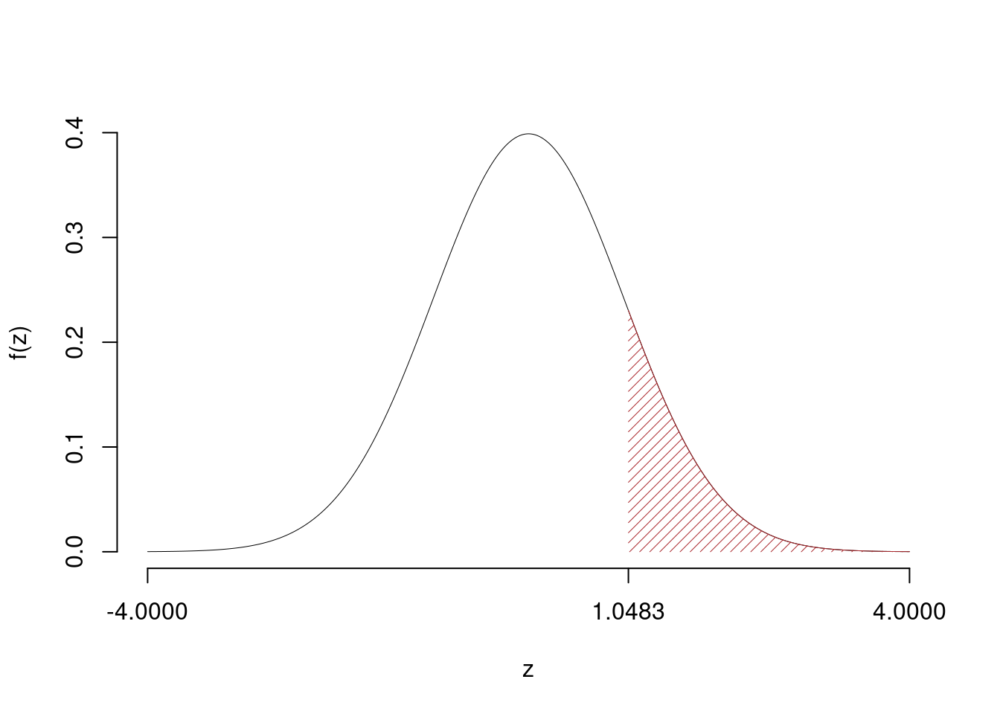
Non rifiuto \(H_0\) a nessun livello di significatività,
\(p_\text{value}>0.1\), non significativo
8.1 Su un campione di \(n = 120\) startup tecnologiche italiane, è stato chiesto se abbiano implementato misure di cybersecurity avanzate. Lo studio ha riportato che 84 startup su 120 (il 70% del campione) hanno implementato queste misure.
Costruire un intervallo di confidenza al 99% per \(\pi\), la quota di startup italiane che hanno implementato misure di cybersecurity avanzate.
\(1-\alpha =0.99\) e quindi \(\alpha=0.01\rightarrow \alpha/2=0.005\)
\[ \hat\pi = \frac{S_n}n = \frac{ 84 }{ 120 }= 0.7 \]
\[\begin{eqnarray*} Idc: & & \hat\pi \pm z_{\alpha/2} \times \sqrt{\frac{\hat\pi(1-\hat\pi)}{n}} \\ & & 0.7 \pm 2.576 \times \sqrt{\frac{ 0.7 (1- 0.7 )}{ 120 }} \\ & & 0.7 \pm 2.576 \times 0.04183 \\ & & [ 0.5922 , 0.8078 ] \end{eqnarray*}\]
8.2 Un’indagine molto più ampia condotta su startup europee ha mostrato che la percentuale di startup con misure di cybersecurity avanzate è del 75%. Testare l’ipotesi che in Italia la quota di startup con misure di cybersecurity avanzate sia uguale a quella europea contro l’alternativa che sia diversa.
Test \(Z\) per una proporzione
La stima \[\hat\pi=\frac { 84 } { 120 }= 0.7 \]
\(\fbox{A}\) FORMULAZIONE DELLE IPOTESI
\[\begin{cases} H_0: \pi = \pi_0=0.75 \\ H_1: \pi \neq \pi_0=0.75 \end{cases}\]
\(\fbox{B}\) SCELTA E CALCOLO STATISTICA-TEST, \(Z\) Test Binomiale per \(n\) grande: \(\Rightarrow\) z-Test.
\[\begin{eqnarray*} \frac{\hat\pi - \pi_{0}} {\sqrt {\pi_0(1-\pi_0)/\,n}}&\sim&N(0,1)\\ z_{\text{obs}} &=& \frac{ ( 0.7 - 0.75 )} {\sqrt{ 0.75 (1- 0.75 )/ 120 }} = -1.265 \,. \end{eqnarray*}\]
\(\fbox{C}\) CONCLUSIONE
Il \(p_{\text{value}}\) è
\[ p_{\text{value}} = P(|Z|>|-1.26|)=2P(Z>1.26)=0.205903 \]
\[ 0.1 < p_\text{value}= 0.205903 \leq 1 \]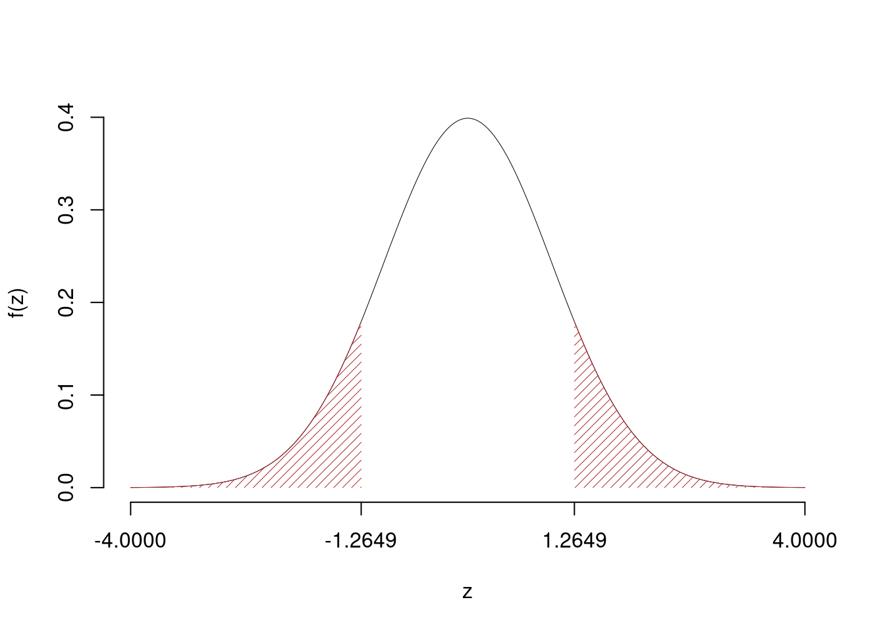
Non rifiuto \(H_0\) a nessun livello di significatività,
\(p_\text{value}>0.1\), non significativo
t-Test a due campioni
9.1 In uno studio sull’efficacia della pubblicità si è proceduto facendo vedere lo spot \(A\) ad un campione di 10 individui (gruppo \(A\)) e lo spot \(B\) ad un secondo campione di 20 individui (gruppo \(B\)). Si è quindi misurato il gradimento con opportuna scala. Il gradimento medio del gruppo \(A\) risulta pari a 95 con una deviazione standard pari a 1.9 mentre il gradimento medio del gruppo \(B\) risulta pari a 92 con una deviazione standard pari a 3.4. Verificare l’ipotesi che il gradimento medio dei due spot sia uguale, contro l’alternativa che lo spot \(A\) sia mediamente più gradito di quello \(B\). Si assuma l’ipotesi di eterogeneità delle varianze dei due gruppi.
Test \(t\) per due medie, (eterogeneità)
\(\fbox{A}\) FORMULAZIONE DELLE IPOTESI
\[\begin{cases} H_0: \mu_\text{A} = \mu_\text{B} \\ H_1: \mu_\text{A} > \mu_\text{B} \end{cases}\]
\(\fbox{B}\) SCELTA E CALCOLO STATISTICA-TEST, \(T\) \[ S^2_\text{ A }=\frac{n_\text{ A }}{n_\text{ A }-1}\hat\sigma^2_\text{ A }=\frac{ 10 }{ 10 -1} 3.4 ^2= 12.84 \qquad S^2_\text{ B }=\frac{n_\text{ B }}{n_\text{ B }-1}\hat\sigma^2_\text{ B }=\frac{ 20 }{ 20 -1} 1.9 ^2= 3.8 \]
\[\begin{eqnarray*} \frac{\hat\mu_\text{ A } - \hat\mu_\text{ B }} {\sqrt{\frac {S^2_\text{ A }}{n_\text{ A }}+\frac {S^2_\text{ B }}{n_\text{ B }}}}&\sim&t_{n_\text{ A }+n_\text{ B }-2}\\ t_{\text{obs}} &=& \frac{ ( 95 - 92 )} {\sqrt{\frac{ 12.84 }{ 10 }+\frac{ 3.8 }{ 20 }}} = 2.471 \, . \end{eqnarray*}\]
\(\fbox{C}\) CONCLUSIONE
Consideriamo \(\alpha=0.1, 0.05, 0.01, 0.001\)
I valori critici sono
\(t_{30-2;0.1}=1.3125\); \(t_{30-2;0.05}=1.7011\); \(t_{30-2;0.01}=2.4671\); \(t_{30-2;0.001}=3.4082\)
Siccome \(2.4671<t_\text{obs}=2.4706<3.4082\), quindi rifiuto \(H_0\) all’1%,
\(0.001<p_\text{value}<0.01\), molto significativo \(\fbox{**}\).
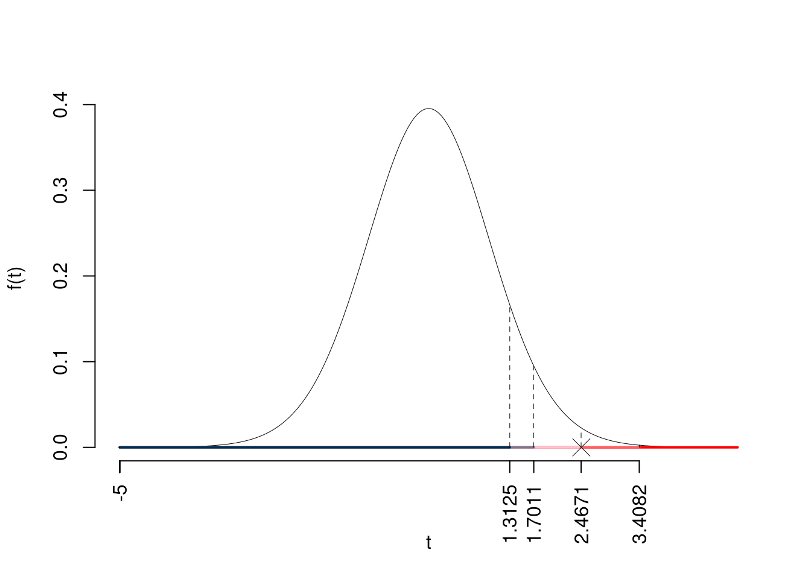
Il \(p_{\text{value}}\) è
\[ p_{\text{value}} = P(T_{30-2}>2.47)=0.009921 \]
Attenzione il calcolo del \(p_\text{value}\) con la \(T\) è puramente illustrativo e non può essere riprodotto senza una calcolatrice statistica adeguata.\[ 0.001 < p_\text{value}= 0.009921 \leq 0.01 \]
10.1 In uno studio sull’efficacia di due metodi di insegnamento della matematica, si è proceduto facendo seguire il metodo \(A\) ad un campione di 15 studenti (gruppo \(A\)) e il metodo \(B\) ad un secondo campione di 18 studenti (gruppo \(B\)). Si è quindi misurata la prestazione degli studenti con un test finale. La prestazione media del gruppo \(A\) risulta pari a 78 con una deviazione standard pari a 8.3, mentre la prestazione media del gruppo \(B\) risulta pari a 74 con una deviazione standard pari a 7.5. Verificare l’ipotesi che la prestazione media dei due metodi di insegnamento sia uguale, contro l’alternativa che il metodo \(A\) produca prestazioni mediamente migliori di quello \(B\). Si assuma l’ipotesi di eterogeneità delle varianze dei due gruppi, anche se i numeri non sembrano giustificarla.
Test \(t\) per due medie, (eterogeneità)
\(\fbox{A}\) FORMULAZIONE DELLE IPOTESI
\[\begin{cases} H_0: \mu_\text{A} = \mu_\text{B} \\ H_1: \mu_\text{A} > \mu_\text{B} \end{cases}\]
\(\fbox{B}\) SCELTA E CALCOLO STATISTICA-TEST, \(T\) \[ S^2_\text{ A }=\frac{n_\text{ A }}{n_\text{ A }-1}\hat\sigma^2_\text{ A }=\frac{ 15 }{ 15 -1} 8.3 ^2= 73.81 \qquad S^2_\text{ B }=\frac{n_\text{ B }}{n_\text{ B }-1}\hat\sigma^2_\text{ B }=\frac{ 18 }{ 18 -1} 7.5 ^2= 59.56 \]
\[\begin{eqnarray*} \frac{\hat\mu_\text{ A } - \hat\mu_\text{ B }} {\sqrt{\frac {S^2_\text{ A }}{n_\text{ A }}+\frac {S^2_\text{ B }}{n_\text{ B }}}}&\sim&t_{n_\text{ A }+n_\text{ B }-2}\\ t_{\text{obs}} &=& \frac{ ( 78 - 74 )} {\sqrt{\frac{ 73.81 }{ 15 }+\frac{ 59.56 }{ 18 }}} = 1.394 \, . \end{eqnarray*}\]
\(\fbox{C}\) CONCLUSIONE
Consideriamo \(\alpha=0.1, 0.05, 0.01, 0.001\)
I valori critici sono
\(t_{33-2;0.1}=1.3095\); \(t_{33-2;0.05}=1.6955\); \(t_{33-2;0.01}=2.4528\); \(t_{33-2;0.001}=3.3749\)
Siccome \(1.3095<t_\text{obs}=1.3944<1.6955\), indecisione sul rifiuto di \(H_0\) al 10%,
\(0.05<p_\text{value}<0.1\), marginalmente significativo \(\fbox{.}\).
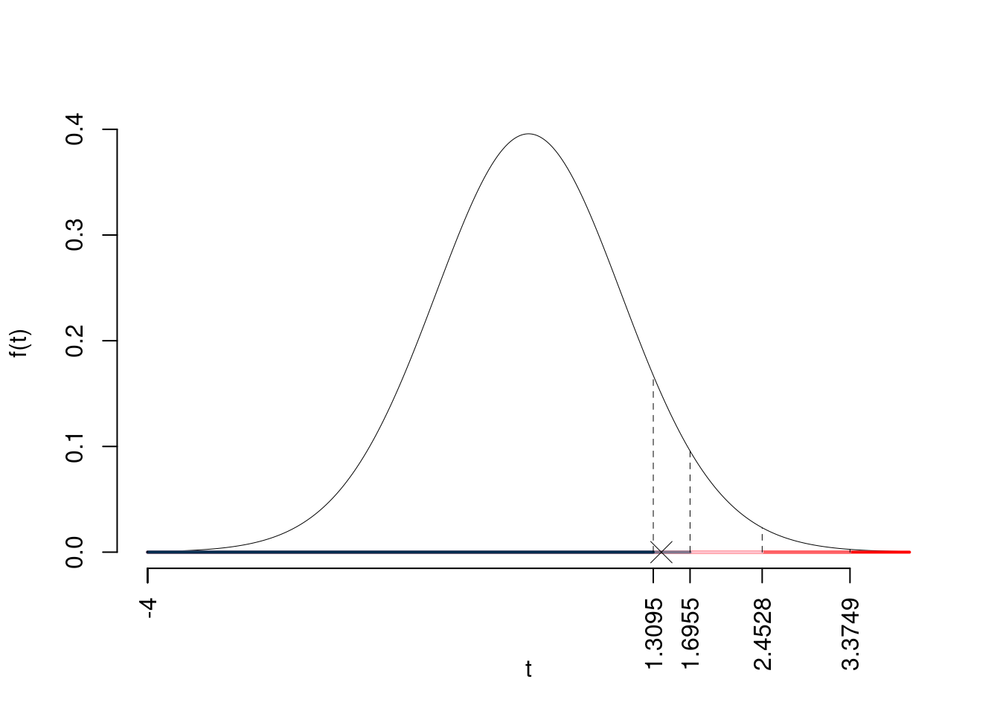
Il \(p_{\text{value}}\) è
\[ p_{\text{value}} = P(T_{33-2}>1.39)=0.086563 \]
Attenzione il calcolo del \(p_\text{value}\) con la \(T\) è puramente illustrativo e non può essere riprodotto senza una calcolatrice statistica adeguata.\[ 0.05 < p_\text{value}= 0.086563 \leq 0.1 \]
11.1 In uno studio sulla produttività dei lavoratori, si è proceduto confrontando i lavoratori del Nord e del Sud. Si è quindi misurata la produttività media con un’opportuna scala. La produttività media del gruppo Nord risulta pari a 85 con una deviazione standard pari a 7.2, mentre la produttività media del gruppo Sud risulta pari a 80 con una deviazione standard pari a 6.8. Verificare l’ipotesi che la produttività media dei due gruppi sia uguale, contro l’alternativa che le due produttività medie siano diverse. Si assuma l’ipotesi di omogeneità delle varianze dei due gruppi.
Test \(T\) per due medie, (omogeneità)
\(\fbox{A}\) FORMULAZIONE DELLE IPOTESI
\[\begin{cases} H_0: \mu_\text{Nord} = \mu_\text{Sud} \\ H_1: \mu_\text{Nord} \neq \mu_\text{Sud} \end{cases}\]
\(\fbox{B}\) SCELTA E CALCOLO STATISTICA-TEST, \(T\)
L’ipotesi è di omogeneità e quindi calcoliamo:\[ S_p^2=\frac{n_\text{ Nord }\hat\sigma^2_\text{ Nord }+n_\text{ Sud }\hat\sigma^2_\text{ Sud }}{n_\text{ Nord }+n_\text{ Sud }-2} = \frac{ 15 \cdot 7.2 ^2+ 18 \cdot 6.8 ^2}{ 15 + 18 -2}= 51.93 \]
\[\begin{eqnarray*} \frac{\hat\mu_\text{ Nord } - \hat\mu_\text{ Sud }} {\sqrt{\frac {S^2_p}{n_\text{ Nord }}+\frac {S^2_p}{n_\text{ Sud }}}}&\sim&t_{n_\text{ Nord }+n_\text{ Sud }-2}\\ t_{\text{obs}} &=& \frac{ ( 85 - 80 )} {\sqrt{\frac{ 55.54 }{ 15 }+\frac{ 48.96 }{ 18 }}} = 1.985 \, . \end{eqnarray*}\]
\(\fbox{C}\) CONCLUSIONE
Siccome \(H_1\) è bilaterale, considereremo \(\alpha/2\), anziché \(\alpha\)
\(\alpha=0.1, 0.05, 0.01, 0.001\) e quindi \(\alpha/2=0.05, 0.025, 0.005, 0.0005\)
I valori critici sono
\(t_{33-2;0.05}=1.6955\); \(t_{33-2;0.025}=2.0395\); \(t_{33-2;0.005}=2.744\); \(t_{33-2;0.0005}=3.6335\)
Siccome \(1.6955<|t_\text{obs}|=1.9846<2.0395\), indecisione sul rifiuto di \(H_0\) al 10%,
\(0.05<p_\text{value}<0.1\), marginalmente significativo \(\fbox{.}\).

Il \(p_{\text{value}}\) è
\[ p_{\text{value}} = P(|T_{33-2}|>|1.98|)=2P(T_{33-2}>1.98)=0.056100 \]
Attenzione il calcolo del \(p_\text{value}\) con la \(T\) è puramente illustrativo e non può essere riprodotto senza una calcolatrice statistica adeguata.\[ 0.05 < p_\text{value}= 0.056100 \leq 0.1 \]
Due campioni: proporzione
12.1 Per verificare se ci sia differenza di genere sulla riforma costituzionale del governo Meloni, si è condotta una indagine su 120 donne e 120 uomini. Dalle interviste è emerso che 60 dei 120 uomini si siano dichiarati favorevoli, mentre 30 delle 120 donne si siano dichiarate favorevoli (numeri di comodo per avere pochi decimali). Verificare l’ipotesi che non ci sia differenza tra uomini e donne, contro l’alternativa che le donne siano meno favorevoli alla riforma costituzionale. Specificare l’ipotesi nulla e l’ipotesi alternativa, il tipo di test da utilizzare, e le conclusioni.
Test \(Z\) per due proporzioni
\(\fbox{A}\) FORMULAZIONE DELLE IPOTESI
\[\begin{cases} H_0: \pi_\text{U} = \pi_\text{D} \\ H_1: \pi_\text{U} > \pi_\text{D} \end{cases}\]
\(\fbox{B}\) SCELTA E CALCOLO STATISTICA-TEST, \(Z\)
\[\hat\pi_\text{ U }=\frac{s_\text{ U }}{n_\text{ U }}=\frac{ 60 }{ 120 }= 0.5 \qquad \hat\pi_\text{ D }=\frac{s_\text{ D }}{n_\text{ D }}=\frac{ 30 }{ 120 }= 0.25 \]Calcoliamo la proporzione comune sotto \(H_0\) \[ \pi_C=\frac{s_\text{ U }+s_\text{ D }}{n_\text{ U }+n_\text{ D }}= \frac{ 90 }{ 240 }= 0.375 \]\[\begin{eqnarray*} \frac{\hat\pi_\text{ U } - \hat\pi_\text{ D }} {\sqrt{\frac {\pi_C(1-\pi_C)}{n_\text{ U }}+\frac {\pi_C(1-\pi_C)}{n_\text{ D }}}}&\sim&N(0,1)\\ z_{\text{obs}} &=& \frac{ ( 0.5 - 0.25 )} {\sqrt{\frac{ 0.375 (1- 0.375 )}{ 120 }+\frac{ 0.375 (1- 0.375 )}{ 120 }}} = 4 \, . \end{eqnarray*}\]
\(\fbox{C}\) CONCLUSIONE
Il \(p_{\text{value}}\) è
\[ p_{\text{value}} = P(Z>4)=0.000032 \]
\[ 0 < p_\text{value}= 0.000032 \leq 0.001 \]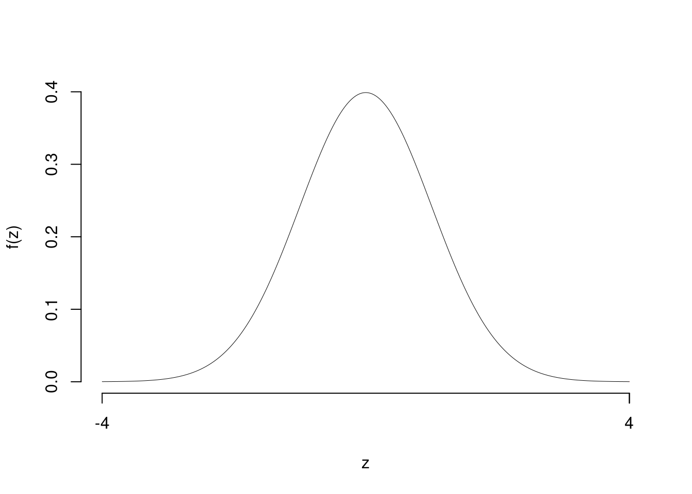
Rifiuto \(H_0\) sotto all’1‰,
\(p_\text{value}<0.001\), estremamente significativo \(\fbox{***}\).
13.1 Per verificare se ci sia differenza nella soddisfazione lavorativa tra dipendenti a tempo pieno e part-time, si è condotta un’indagine su 100 dipendenti a tempo pieno e 100 dipendenti part-time. Dalle interviste è emerso che 70 dei 100 dipendenti a tempo pieno si siano dichiarati soddisfatti, mentre 50 dei 100 dipendenti part-time si siano dichiarati soddisfatti. Verificare l’ipotesi che non ci sia differenza nella soddisfazione lavorativa tra dipendenti a tempo pieno e part-time, contro l’alternativa che i dipendenti part-time siano meno soddisfatti. Specificare l’ipotesi nulla e l’ipotesi alternativa, il tipo di test da utilizzare, e le conclusioni.
Test \(Z\) per due proporzioni
\(\fbox{A}\) FORMULAZIONE DELLE IPOTESI
\[\begin{cases} H_0: \pi_\text{Tempo Pieno} = \pi_\text{Part-Time} \\ H_1: \pi_\text{Tempo Pieno} > \pi_\text{Part-Time} \end{cases}\]
\(\fbox{B}\) SCELTA E CALCOLO STATISTICA-TEST, \(Z\)
\[\hat\pi_\text{ Tempo Pieno }=\frac{s_\text{ Tempo Pieno }}{n_\text{ Tempo Pieno }}=\frac{ 70 }{ 100 }= 0.7 \qquad \hat\pi_\text{ Part-Time }=\frac{s_\text{ Part-Time }}{n_\text{ Part-Time }}=\frac{ 50 }{ 100 }= 0.5 \]Calcoliamo la proporzione comune sotto \(H_0\) \[ \pi_C=\frac{s_\text{ Tempo Pieno }+s_\text{ Part-Time }}{n_\text{ Tempo Pieno }+n_\text{ Part-Time }}= \frac{ 120 }{ 200 }= 0.6 \]\[\begin{eqnarray*} \frac{\hat\pi_\text{ Tempo Pieno } - \hat\pi_\text{ Part-Time }} {\sqrt{\frac {\pi_C(1-\pi_C)}{n_\text{ Tempo Pieno }}+\frac {\pi_C(1-\pi_C)}{n_\text{ Part-Time }}}}&\sim&N(0,1)\\ z_{\text{obs}} &=& \frac{ ( 0.7 - 0.5 )} {\sqrt{\frac{ 0.6 (1- 0.6 )}{ 100 }+\frac{ 0.6 (1- 0.6 )}{ 100 }}} = 2.887 \, . \end{eqnarray*}\]
\(\fbox{C}\) CONCLUSIONE
Il \(p_{\text{value}}\) è
\[ p_{\text{value}} = P(Z>2.89)=0.001946 \]
\[ 0.001 < p_\text{value}= 0.001946 \leq 0.01 \]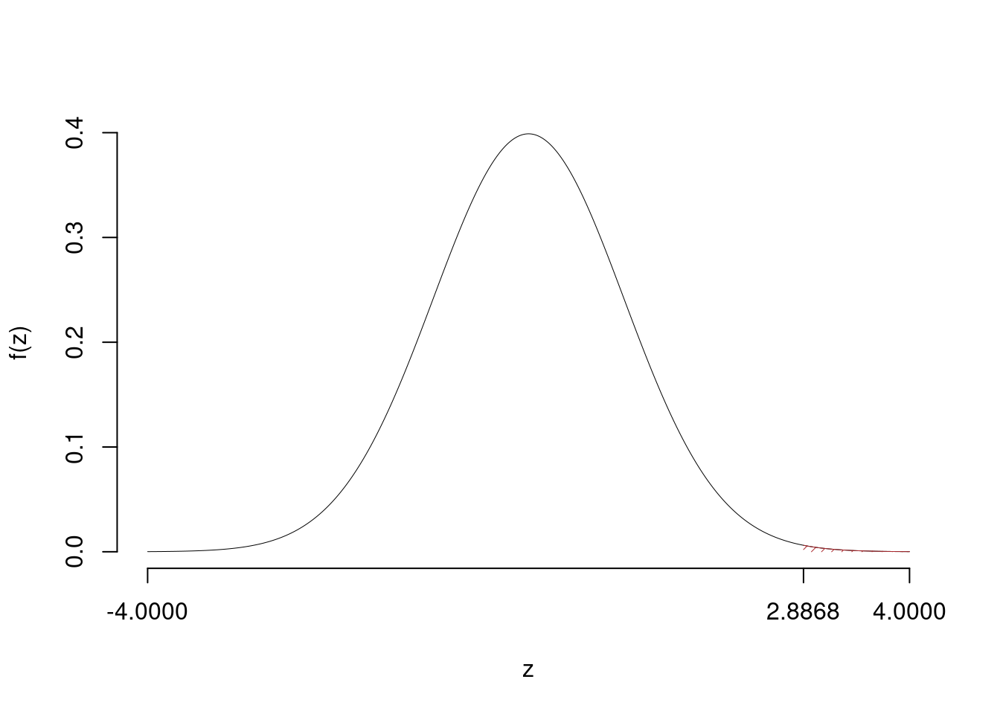
Rifiuto \(H_0\) all’1%,
\(0.001<p_\text{value}<0.01\), molto significativo \(\fbox{**}\).
14.1 Per verificare se ci sia differenza nella preferenza per il lavoro remoto tra dipendenti di aziende tecnologiche e dipendenti di aziende manifatturiere, si è condotta un’indagine su 90 dipendenti di aziende tecnologiche e 90 dipendenti di aziende manifatturiere. Dalle interviste è emerso che 63 dei 90 dipendenti di aziende tecnologiche preferiscono il lavoro remoto, mentre 45 dei 90 dipendenti di aziende manifatturiere preferiscono il lavoro remoto. Verificare l’ipotesi che non ci sia differenza nella preferenza per il lavoro remoto tra i due gruppi, contro l’alternativa che ci sia una differenza significativa. Specificare l’ipotesi nulla e l’ipotesi alternativa, il tipo di test da utilizzare, e le conclusioni.
Test \(Z\) per due proporzioni
\(\fbox{A}\) FORMULAZIONE DELLE IPOTESI
\[\begin{cases} H_0: \pi_\text{Tecnologiche} = \pi_\text{Manifatturiere} \\ H_1: \pi_\text{Tecnologiche} \neq \pi_\text{Manifatturiere} \end{cases}\]
\(\fbox{B}\) SCELTA E CALCOLO STATISTICA-TEST, \(Z\)
\[\hat\pi_\text{ Tecnologiche }=\frac{s_\text{ Tecnologiche }}{n_\text{ Tecnologiche }}=\frac{ 63 }{ 90 }= 0.7 \qquad \hat\pi_\text{ Manifatturiere }=\frac{s_\text{ Manifatturiere }}{n_\text{ Manifatturiere }}=\frac{ 45 }{ 90 }= 0.5 \]Calcoliamo la proporzione comune sotto \(H_0\) \[ \pi_C=\frac{s_\text{ Tecnologiche }+s_\text{ Manifatturiere }}{n_\text{ Tecnologiche }+n_\text{ Manifatturiere }}= \frac{ 108 }{ 180 }= 0.6 \]\[\begin{eqnarray*} \frac{\hat\pi_\text{ Tecnologiche } - \hat\pi_\text{ Manifatturiere }} {\sqrt{\frac {\pi_C(1-\pi_C)}{n_\text{ Tecnologiche }}+\frac {\pi_C(1-\pi_C)}{n_\text{ Manifatturiere }}}}&\sim&N(0,1)\\ z_{\text{obs}} &=& \frac{ ( 0.7 - 0.5 )} {\sqrt{\frac{ 0.6 (1- 0.6 )}{ 90 }+\frac{ 0.6 (1- 0.6 )}{ 90 }}} = 2.739 \, . \end{eqnarray*}\]
\(\fbox{C}\) CONCLUSIONE
Il \(p_{\text{value}}\) è
\[ p_{\text{value}} = P(|Z|>|2.74|)=2P(Z>2.74)=0.006170 \]
\[ 0.001 < p_\text{value}= 0.006170 \leq 0.01 \]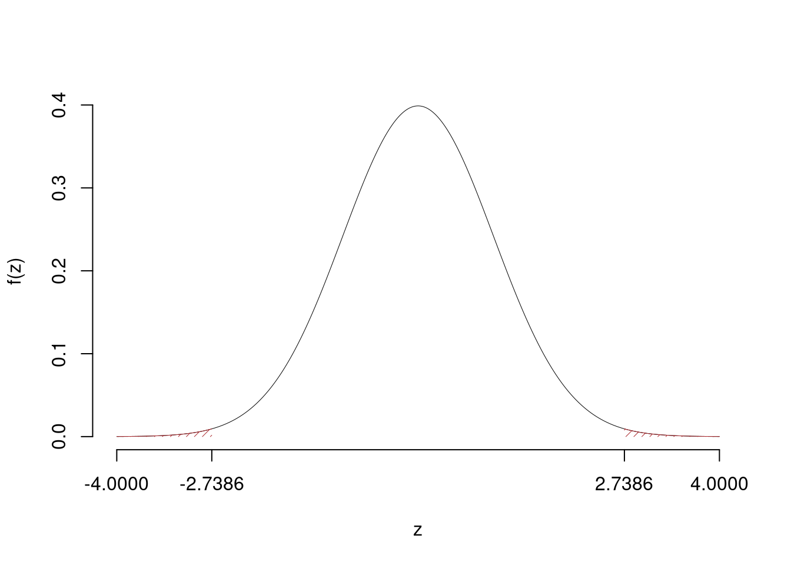
Rifiuto \(H_0\) all’1%,
\(0.001<p_\text{value}<0.01\), molto significativo \(\fbox{**}\).